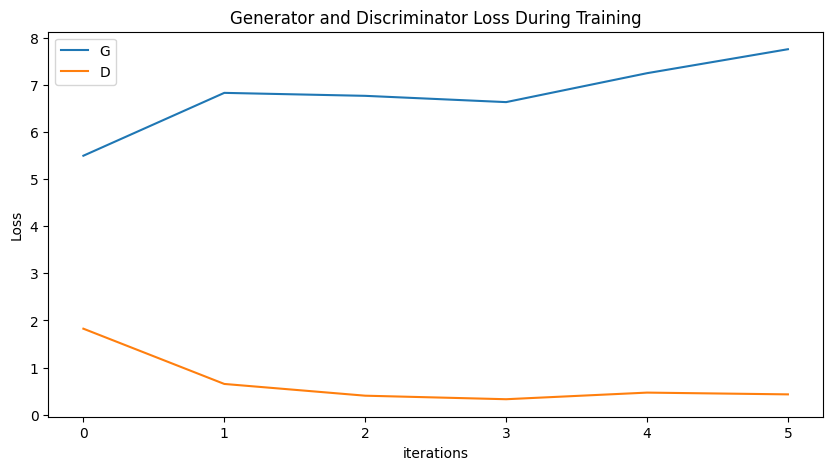

This tutorial will give an introduction to DCGANs through an example. We will train a generative adversarial network (GAN) to generate new celebrities after showing it pictures of many real celebrities. Most of the code here is from the DCGAN implementation in pytorch/examples_, and this document will give a thorough explanation of the implementation and shed light on how and why this model works. But don’t worry, no prior knowledge of GANs is required, but it may require a first-timer to spend some time reasoning about what is actually happening under the hood. Also, for the sake of time it will help to have a GPU, or two. Lets start from the beginning.
Generative Adversarial Networks
What is a GAN?
GANs are a framework for teaching a deep learning model to capture the training data distribution so we can generate new data from that same distribution. GANs were invented by Ian Goodfellow in 2014 and first described in the paper Generative Adversarial Nets_. They are made of two distinct models, a generator and a discriminator. The job of the generator is to spawn ‘fake’ images that look like the training images. The job of the discriminator is to look at an image and output whether or not it is a real training image or a fake image from the generator. During training, the generator is constantly trying to outsmart the discriminator by generating better and better fakes, while the discriminator is working to become a better detective and correctly classify the real and fake images. The equilibrium of this game is when the generator is generating perfect fakes that look as if they came directly from the training data, and the discriminator is left to always guess at 50% confidence that the generator output is real or fake.
Now, lets define some notation to be used throughout tutorial starting with the discriminator. Let \(x\) be data representing an image. \(D(x)\) is the discriminator network which outputs the (scalar) probability that \(x\) came from training data rather than the generator. Here, since we are dealing with images, the input to \(D(x)\) is an image of CHW size 3x64x64. Intuitively, \(D(x)\) should be HIGH when \(x\) comes from training data and LOW when \(x\) comes from the generator. \(D(x)\) can also be thought of as a traditional binary classifier.
For the generator’s notation, let \(z\) be a latent space vector sampled from a standard normal distribution. \(G(z)\) represents the generator function which maps the latent vector \(z\) to data-space. The goal of \(G\) is to estimate the distribution that the training data comes from (\(p_{data}\)) so it can generate fake samples from that estimated distribution (\(p_g\)).
So, \(D(G(z))\) is the probability (scalar) that the output of the generator \(G\) is a real image. As described in Goodfellow’s paper_, \(D\) and \(G\) play a minimax game in which \(D\) tries to maximize the probability it correctly classifies reals and fakes (\(logD(x)\)), and \(G\) tries to minimize the probability that \(D\) will predict its outputs are fake (\(log(1-D(G(z)))\)). From the paper, the GAN loss function is
In theory, the solution to this minimax game is where \(p_g = p_{data}\), and the discriminator guesses randomly if the inputs are real or fake. However, the convergence theory of GANs is still being actively researched and in reality models do not always train to this point.
What is a DCGAN?
A DCGAN is a direct extension of the GAN described above, except that it explicitly uses convolutional and convolutional-transpose layers in the discriminator and generator, respectively. It was first described by Radford et. al. in the paper Unsupervised Representation Learning With Deep Convolutional Generative Adversarial Networks. The discriminator is made up of strided convolution layers, batch norm layers, and LeakyReLU activations. The input is a 3x64x64 input image and the output is a scalar probability that the input is from the real data distribution. The generator is comprised of convolutional-transpose layers, batch norm layers, and ReLU activations. The input is a latent vector, \(z\), that is drawn from a standard normal distribution and the output is a 3x64x64 RGB image. The strided conv-transpose layers allow the latent vector to be transformed into a volume with the same shape as an image. In the paper, the authors also give some tips about how to setup the optimizers, how to calculate the loss functions, and how to initialize the model weights, all of which will be explained in the coming sections.
from __future__ import print_function#%matplotlib inlineimport argparseimport osimport randomimport torchimport torch.nn as nnimport torch.nn.parallelimport torch.backends.cudnn as cudnnimport torch.optim as optimimport torch.utils.dataimport torchvision.datasets as dsetimport torchvision.transforms as transformsimport torchvision.utils as vutilsimport numpy as npimport matplotlib.pyplot as pltimport matplotlib.animation as animationfrom IPython.display import HTML# Set random seed for reproducibilitymanualSeed =999#manualSeed = random.randint(1, 10000) # use if you want new resultsprint("Random Seed: ", manualSeed)random.seed(manualSeed)torch.manual_seed(manualSeed)
Random Seed: 999
<torch._C.Generator at 0x7a2bcd9a9310>
Inputs
Let’s define some inputs for the run:
dataroot - the path to the root of the dataset folder. We will talk more about the dataset in the next section.
workers - the number of worker threads for loading the data with the DataLoader.
batch_size - the batch size used in training. The DCGAN paper uses a batch size of 128.
image_size - the spatial size of the images used for training. This implementation defaults to 64x64. If another size is desired, the structures of D and G must be changed. See here_ for more details.
nc - number of color channels in the input images. For color images this is 3.
nz - length of latent vector.
ngf - relates to the depth of feature maps carried through the generator.
ndf - sets the depth of feature maps propagated through the discriminator.
num_epochs - number of training epochs to run. Training for longer will probably lead to better results but will also take much longer.
lr - learning rate for training. As described in the DCGAN paper, this number should be 0.0002.
beta1 - beta1 hyperparameter for Adam optimizers. As described in paper, this number should be 0.5.
ngpu - number of GPUs available. If this is 0, code will run in CPU mode. If this number is greater than 0 it will run on that number of GPUs.
# Root directory for datasetdataroot ="data/celeba"# Number of workers for dataloaderworkers =2# Batch size during trainingbatch_size =128# Spatial size of training images. All images will be resized to this# size using a transformer.image_size =64# Number of channels in the training images. For color images this is 3nc =3# Size of z latent vector (i.e. size of generator input)nz =100# Size of feature maps in generatorngf =64# Size of feature maps in discriminatorndf =64# Number of training epochsnum_epochs =5# Learning rate for optimizerslr =0.0002# Beta1 hyperparameter for Adam optimizersbeta1 =0.5# Number of GPUs available. Use 0 for CPU mode.ngpu =0
Data
In this tutorial we will use the Celeb-A Faces dataset_ which can be downloaded at the linked site, or in Google Drive_. The dataset will download as a file named img_align_celeba.zip. Once downloaded, create a directory named celeba and extract the zip file into that directory. Then, set the dataroot input for this notebook to the celeba directory you just created. The resulting directory structure should be:
This is an important step because we will be using the ImageFolder dataset class, which requires there to be subdirectories in the dataset root folder. Now, we can create the dataset, create the dataloader, set the device to run on, and finally visualize some of the training data.
# from google.colab import drive# drive.mount('/content/drive')
# We can use an image folder dataset the way we have it setup.# Create the datasetdataset = dset.ImageFolder(root=dataroot, transform=transforms.Compose([ transforms.Resize(image_size), transforms.CenterCrop(image_size), transforms.ToTensor(), transforms.Normalize((0.5, 0.5, 0.5), (0.5, 0.5, 0.5)), ]))# Create the dataloaderdataloader = torch.utils.data.DataLoader(dataset, batch_size=batch_size, shuffle=True, num_workers=workers)# Decide which device we want to run ondevice = torch.device("cuda:0"if (torch.cuda.is_available() and ngpu >0) else"cpu")# Plot some training imagesreal_batch =next(iter(dataloader))plt.figure(figsize=(8,8))plt.axis("off")plt.title("Training Images")plt.imshow(np.transpose(vutils.make_grid(real_batch[0].to(device)[:64], padding=2, normalize=True).cpu(),(1,2,0)))
Implementation
With our input parameters set and the dataset prepared, we can now get into the implementation. We will start with the weight initialization strategy, then talk about the generator, discriminator, loss functions, and training loop in detail.
Weight Initialization
From the DCGAN paper, the authors specify that all model weights shall be randomly initialized from a Normal distribution with mean=0, stdev=0.02. The weights_init function takes an initialized model as input and reinitializes all convolutional, convolutional-transpose, and batch normalization layers to meet this criteria. This function is applied to the models immediately after initialization.
# custom weights initialization called on ``netG`` and ``netD``def weights_init(m): classname = m.__class__.__name__if classname.find('Conv') !=-1: nn.init.normal_(m.weight.data, 0.0, 0.02)elif classname.find('BatchNorm') !=-1: nn.init.normal_(m.weight.data, 1.0, 0.02) nn.init.constant_(m.bias.data, 0)
Generator
The generator, \(G\), is designed to map the latent space vector (\(z\)) to data-space. Since our data are images, converting \(z\) to data-space means ultimately creating a RGB image with the same size as the training images (i.e. 3x64x64). In practice, this is accomplished through a series of strided two dimensional convolutional transpose layers, each paired with a 2d batch norm layer and a relu activation. The output of the generator is fed through a tanh function to return it to the input data range of \([-1,1]\). It is worth noting the existence of the batch norm functions after the conv-transpose layers, as this is a critical contribution of the DCGAN paper. These layers help with the flow of gradients during training. An image of the generator from the DCGAN paper is shown below.
Notice, how the inputs we set in the input section (nz, ngf, and nc) influence the generator architecture in code. nz is the length of the z input vector, ngf relates to the size of the feature maps that are propagated through the generator, and nc is the number of channels in the output image (set to 3 for RGB images). Below is the code for the generator.
# Generator Codeclass Generator(nn.Module):def__init__(self, ngpu):super(Generator, self).__init__()self.ngpu = ngpuself.main = nn.Sequential(# input is Z, going into a convolution nn.ConvTranspose2d( nz, ngf *8, 4, 1, 0, bias=False), nn.BatchNorm2d(ngf *8), nn.ReLU(True),# state size. ``(ngf*8) x 4 x 4`` nn.ConvTranspose2d(ngf *8, ngf *4, 4, 2, 1, bias=False), nn.BatchNorm2d(ngf *4), nn.ReLU(True),# state size. ``(ngf*4) x 8 x 8`` nn.ConvTranspose2d( ngf *4, ngf *2, 4, 2, 1, bias=False), nn.BatchNorm2d(ngf *2), nn.ReLU(True),# state size. ``(ngf*2) x 16 x 16`` nn.ConvTranspose2d( ngf *2, ngf, 4, 2, 1, bias=False), nn.BatchNorm2d(ngf), nn.ReLU(True),# state size. ``(ngf) x 32 x 32`` nn.ConvTranspose2d( ngf, nc, 4, 2, 1, bias=False), nn.Tanh()# state size. ``(nc) x 64 x 64`` )def forward(self, input):returnself.main(input)
Now, we can instantiate the generator and apply the weights_init function. Check out the printed model to see how the generator object is structured.
# Create the generatornetG = Generator(ngpu).to(device)# Handle multi-GPU if desiredif (device.type=='cuda') and (ngpu >1): netG = nn.DataParallel(netG, list(range(ngpu)))# Apply the ``weights_init`` function to randomly initialize all weights# to ``mean=0``, ``stdev=0.02``.netG.apply(weights_init)# Print the modelprint(netG)
As mentioned, the discriminator, \(D\), is a binary classification network that takes an image as input and outputs a scalar probability that the input image is real (as opposed to fake). Here, \(D\) takes a 3x64x64 input image, processes it through a series of Conv2d, BatchNorm2d, and LeakyReLU layers, and outputs the final probability through a Sigmoid activation function. This architecture can be extended with more layers if necessary for the problem, but there is significance to the use of the strided convolution, BatchNorm, and LeakyReLUs. The DCGAN paper mentions it is a good practice to use strided convolution rather than pooling to downsample because it lets the network learn its own pooling function. Also batch norm and leaky relu functions promote healthy gradient flow which is critical for the learning process of both \(G\) and \(D\).
Discriminator Code
class Discriminator(nn.Module):def__init__(self, ngpu):super(Discriminator, self).__init__()self.ngpu = ngpuself.main = nn.Sequential(# input is ``(nc) x 64 x 64`` nn.Conv2d(nc, ndf, 4, 2, 1, bias=False), nn.LeakyReLU(0.2, inplace=True),# state size. ``(ndf) x 32 x 32`` nn.Conv2d(ndf, ndf *2, 4, 2, 1, bias=False), nn.BatchNorm2d(ndf *2), nn.LeakyReLU(0.2, inplace=True),# state size. ``(ndf*2) x 16 x 16`` nn.Conv2d(ndf *2, ndf *4, 4, 2, 1, bias=False), nn.BatchNorm2d(ndf *4), nn.LeakyReLU(0.2, inplace=True),# state size. ``(ndf*4) x 8 x 8`` nn.Conv2d(ndf *4, ndf *8, 4, 2, 1, bias=False), nn.BatchNorm2d(ndf *8), nn.LeakyReLU(0.2, inplace=True),# state size. ``(ndf*8) x 4 x 4`` nn.Conv2d(ndf *8, 1, 4, 1, 0, bias=False), nn.Sigmoid() )def forward(self, input):returnself.main(input)
Now, as with the generator, we can create the discriminator, apply the weights_init function, and print the model’s structure.
# Create the DiscriminatornetD = Discriminator(ngpu).to(device)# Handle multi-GPU if desiredif (device.type=='cuda') and (ngpu >1): netD = nn.DataParallel(netD, list(range(ngpu)))# Apply the ``weights_init`` function to randomly initialize all weights# like this: ``to mean=0, stdev=0.2``.netD.apply(weights_init)# Print the modelprint(netD)
With \(D\) and \(G\) setup, we can specify how they learn through the loss functions and optimizers. We will use the Binary Cross Entropy loss (BCELoss_) function which is defined in PyTorch as:
Notice how this function provides the calculation of both log components in the objective function (i.e. \(log(D(x))\) and \(log(1-D(G(z)))\)). We can specify what part of the BCE equation to use with the \(y\) input. This is accomplished in the training loop which is coming up soon, but it is important to understand how we can choose which component we wish to calculate just by changing \(y\) (i.e. GT labels).
Next, we define our real label as 1 and the fake label as 0. These labels will be used when calculating the losses of \(D\) and \(G\), and this is also the convention used in the original GAN paper. Finally, we set up two separate optimizers, one for \(D\) and one for \(G\). As specified in the DCGAN paper, both are Adam optimizers with learning rate 0.0002 and Beta1 = 0.5. For keeping track of the generator’s learning progression, we will generate a fixed batch of latent vectors that are drawn from a Gaussian distribution (i.e. fixed_noise) . In the training loop, we will periodically input this fixed_noise into \(G\), and over the iterations we will see images form out of the noise.
# Initialize the ``BCELoss`` functioncriterion = nn.BCELoss()# Create batch of latent vectors that we will use to visualize# the progression of the generatorfixed_noise = torch.randn(64, nz, 1, 1, device=device)# Establish convention for real and fake labels during trainingreal_label =1.fake_label =0.# Setup Adam optimizers for both G and DoptimizerD = optim.Adam(netD.parameters(), lr=lr, betas=(beta1, 0.999))optimizerG = optim.Adam(netG.parameters(), lr=lr, betas=(beta1, 0.999))
Training
Finally, now that we have all of the parts of the GAN framework defined, we can train it. Be mindful that training GANs is somewhat of an art form, as incorrect hyperparameter settings lead to mode collapse with little explanation of what went wrong. Here, we will closely follow Algorithm 1 from the Goodfellow’s paper, while abiding by some of the best practices shown in ganhacks. Namely, we will “construct different mini-batches for real and fake” images, and also adjust G’s objective function to maximize \(log(D(G(z)))\). Training is split up into two main parts. Part 1 updates the Discriminator and Part 2 updates the Generator.
Part 1 - Train the Discriminator
Recall, the goal of training the discriminator is to maximize the probability of correctly classifying a given input as real or fake. In terms of Goodfellow, we wish to “update the discriminator by ascending its stochastic gradient”. Practically, we want to maximize \(log(D(x)) + log(1-D(G(z)))\). Due to the separate mini-batch suggestion from ganhacks_, we will calculate this in two steps. First, we will construct a batch of real samples from the training set, forward pass through \(D\), calculate the loss (\(log(D(x))\)), then calculate the gradients in a backward pass. Secondly, we will construct a batch of fake samples with the current generator, forward pass this batch through \(D\), calculate the loss (\(log(1-D(G(z)))\)), and accumulate the gradients with a backward pass. Now, with the gradients accumulated from both the all-real and all-fake batches, we call a step of the Discriminator’s optimizer.
Part 2 - Train the Generator
As stated in the original paper, we want to train the Generator by minimizing \(log(1-D(G(z)))\) in an effort to generate better fakes. As mentioned, this was shown by Goodfellow to not provide sufficient gradients, especially early in the learning process. As a fix, we instead wish to maximize \(log(D(G(z)))\). In the code we accomplish this by: classifying the Generator output from Part 1 with the Discriminator, computing G’s loss using real labels as GT, computing G’s gradients in a backward pass, and finally updating G’s parameters with an optimizer step. It may seem counter-intuitive to use the real labels as GT labels for the loss function, but this allows us to use the \(log(x)\) part of the BCELoss (rather than the \(log(1-x)\) part) which is exactly what we want.
Finally, we will do some statistic reporting and at the end of each epoch we will push our fixed_noise batch through the generator to visually track the progress of G’s training. The training statistics reported are:
Loss_D - discriminator loss calculated as the sum of losses for the all real and all fake batches (\(log(D(x)) + log(1 - D(G(z)))\)).
Loss_G - generator loss calculated as \(log(D(G(z)))\)
D(x) - the average output (across the batch) of the discriminator for the all real batch. This should start close to 1 then theoretically converge to 0.5 when G gets better. Think about why this is.
D(G(z)) - average discriminator outputs for the all fake batch. The first number is before D is updated and the second number is after D is updated. These numbers should start near 0 and converge to 0.5 as G gets better. Think about why this is.
Note: This step might take a while, depending on how many epochs you run and if you removed some data from the dataset.
# Training Loop# Lists to keep track of progressimg_list = []G_losses = []D_losses = []iters =0print("Starting Training Loop...")# For each epochfor epoch inrange(num_epochs):# For each batch in the dataloaderfor i, data inenumerate(dataloader, 0):############################# (1) Update D network: maximize log(D(x)) + log(1 - D(G(z)))############################# Train with all-real batch netD.zero_grad()# Format batch real_cpu = data[0].to(device) b_size = real_cpu.size(0) label = torch.full((b_size,), real_label, dtype=torch.float, device=device)# Forward pass real batch through D output = netD(real_cpu).view(-1)# Calculate loss on all-real batch errD_real = criterion(output, label)# Calculate gradients for D in backward pass errD_real.backward() D_x = output.mean().item()## Train with all-fake batch# Generate batch of latent vectors noise = torch.randn(b_size, nz, 1, 1, device=device)# Generate fake image batch with G fake = netG(noise) label.fill_(fake_label)# Classify all fake batch with D output = netD(fake.detach()).view(-1)# Calculate D's loss on the all-fake batch errD_fake = criterion(output, label)# Calculate the gradients for this batch, accumulated (summed) with previous gradients errD_fake.backward() D_G_z1 = output.mean().item()# Compute error of D as sum over the fake and the real batches errD = errD_real + errD_fake# Update D optimizerD.step()############################# (2) Update G network: maximize log(D(G(z)))########################### netG.zero_grad() label.fill_(real_label) # fake labels are real for generator cost# Since we just updated D, perform another forward pass of all-fake batch through D output = netD(fake).view(-1)# Calculate G's loss based on this output errG = criterion(output, label)# Calculate gradients for G errG.backward() D_G_z2 = output.mean().item()# Update G optimizerG.step()# Output training statsif i %50==0:print('[%d/%d][%d/%d]\tLoss_D: %.4f\tLoss_G: %.4f\tD(x): %.4f\tD(G(z)): %.4f / %.4f' errD.item(), errG.item(), D_x, D_G_z1, D_G_z2))# Save Losses for plotting later G_losses.append(errG.item()) D_losses.append(errD.item())# Check how the generator is doing by saving G's output on fixed_noiseif (iters %500==0) or ((epoch == num_epochs-1) and (i ==len(dataloader)-1)):with torch.no_grad(): fake = netG(fixed_noise).detach().cpu() img_list.append(vutils.make_grid(fake, padding=2, normalize=True)) iters +=1
Results
Finally, lets check out how we did. Here, we will look at three different results. First, we will see how D and G’s losses changed during training. Second, we will visualize G’s output on the fixed_noise batch for every epoch. And third, we will look at a batch of real data next to a batch of fake data from G.
Loss versus training iteration
Below is a plot of D & G’s losses versus training iterations.
plt.figure(figsize=(10,5))plt.title("Generator and Discriminator Loss During Training")plt.plot(G_losses,label="G")plt.plot(D_losses,label="D")plt.xlabel("iterations")plt.ylabel("Loss")plt.legend()plt.show()

Visualization of G’s progression
Remember how we saved the generator’s output on the fixed_noise batch after every epoch of training. Now, we can visualize the training progression of G with an animation. Press the play button to start the animation.
fig = plt.figure(figsize=(8,8))plt.axis("off")ims = [[plt.imshow(np.transpose(i,(1,2,0)), animated=True)] for i in img_list]ani = animation.ArtistAnimation(fig, ims, interval=1000, repeat_delay=1000, blit=True)HTML(ani.to_jshtml())
Output hidden; open in https://colab.research.google.com to view.
Real Images vs. Fake Images
Finally, lets take a look at some real images and fake images side by side.
# Grab a batch of real images from the dataloaderreal_batch =next(iter(dataloader))# Plot the real imagesplt.figure(figsize=(15,15))plt.subplot(1,2,1)plt.axis("off")plt.title("Real Images")plt.imshow(np.transpose(vutils.make_grid(real_batch[0].to(device)[:64], padding=5, normalize=True).cpu(),(1,2,0)))# Plot the fake images from the last epochplt.subplot(1,2,2)plt.axis("off")plt.title("Fake Images")plt.imshow(np.transpose(img_list[-1],(1,2,0)))plt.show()
Where to Go Next
We have reached the end of our journey, but there are several places you could go from here. You could:
Train for longer to see how good the results get
Modify this model to take a different dataset and possibly change the size of the images and the model architecture